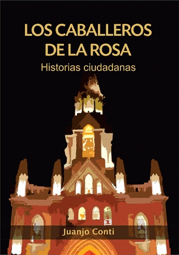

Ya estoy distribuyendo este libro impreso gracias al financiamiento colectivo: http://idea.me/proyecto/144/loscaballerosdelarosa

Reseña
Los caballeros de La Rosa se reúnen todas las noches en el seno del barrio santafesino de Guadalupe. Sociedad secreta, fundada por los sobrinos del ermitaño Javier de La Rosa, tienen por objetivo velar por la tranquilidad del barrio, contar historias y tomar licor de menta.
En la agrupación son siempre cinco y cuando uno cumple los 36 años, un sobrino suyo toma el lugar. Su estatuto afirma que el objeto de está regla es mantener la vigorosidad de la sangre joven en el grupo, pero mas de un exmiembro sabe que la verdadera razón está mas cerca del hecho de que sus mujeres no ven con buenos ojos las salidas nocturnas que de otra cosa.
Sus historias se confunden con anécdotas ciudadanas, pero si el nivel de la botella de licor de menta bajó lo suficiente, estas pueden volar más alto y contarse en clave fantástica.
Índice
Los caballeros de la Rosa
- El salvador del futuro
- Policiales
- Obras incompletas de Aldo Albarracín
- Semáforos
- El oto espejo
- La última venganza
- En la farmacia
- El libro buscado
- Tiempo para leer
- Una noche en el bar De las Moscas
- Remignton
- Los ojos
- El ciruja
Historias escritas bajo tierra
- Necesitás ir a la manicura, hija
- Comunicado 3421/6
- Magia subterránea
- Charla en el subte subatómico
- Violonchelo
- El inocente
Etcéteras
- 2084
- Anéctodas del maldito nerd
- El recreo más largo de la historia
- El canto de clementina
Epílogo en diálogo
Descargar la versión digital
[download id="5"]
Cómo obtener una copia impresa
El libro puede comprarse en la tienda virtual de este blog o conseguirse en las librerías:
- El Arca del Sur (Irigoyen Freyre Nº 2935, Santa Fe, Santa Fe)
- MC (Carlos Pellegrini, Santa Fe)
- Distribuiodar del Este (Córdoba 51, San Francisco, Córdoba)
- Quiosquito de Orsai Club (Estados Unidos 2786, CABA)
Licencia

Los caballeros de la Rosa. Historias ciudadanas is licensed under a Creative Commons Attribution-NonCommercial-ShareAlike 3.0 Unported License.
Comentarios
Abajo podés dejar comentarios sobre el libro. También podés mandarme un mail.